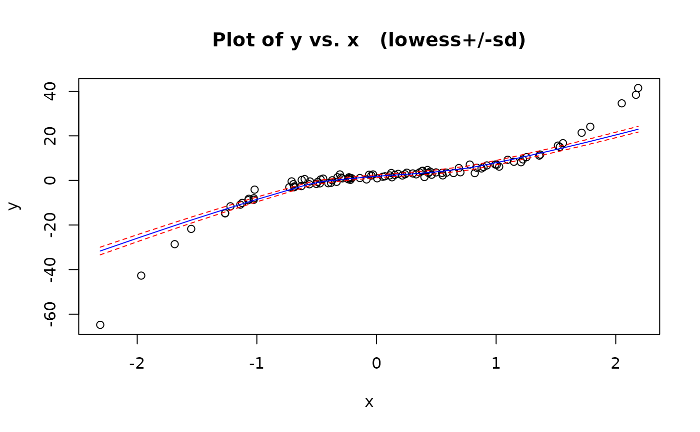
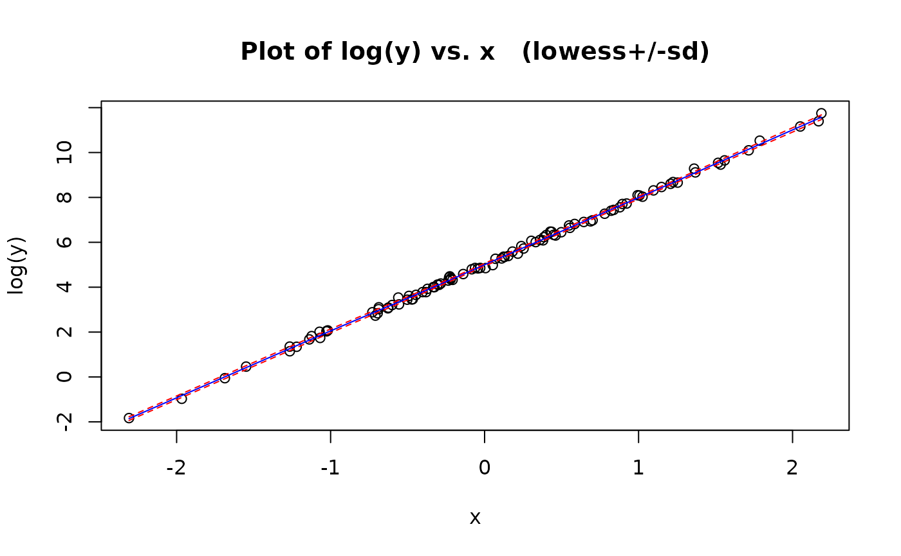
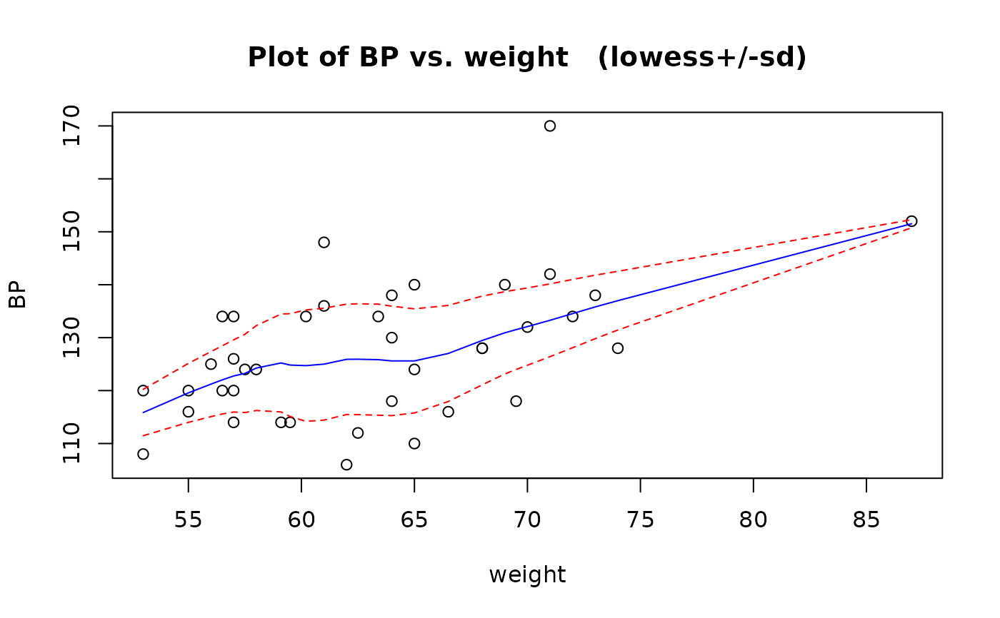

Plots a scatter plot for the variables x, y along with a lowess smooth for the underlying trend. One standard deviation error bounds for the scatter about this trend are also plotted.
Usage
trendscatter(x, ...)
# Default S3 method
trendscatter(x, y = NULL, f = 0.5, xlab = NULL, ylab = NULL, main = NULL, ...)
# S3 method for class 'formula'
trendscatter(
x,
f = 0.5,
data = NULL,
xlab = NULL,
ylab = NULL,
main = NULL,
...
)Arguments
- x
the coordinates of the points in the scatter plot. Alternatively, a formula.
- ...
Optional arguments
- y
the y coordinates of the points in the plot, ignored if
xis a function.- f
the smoother span. This gives the proportion of points in the plot which influence the smooth at each value. Larger values give more smoothness.
- xlab
a title for the x axis: see
title.- ylab
a title for the y axis: see
title.- main
a title for the plot: see
title.- data
an optional data frame containing the variables in the model.
Methods (by class)
trendscatter(default): Trend and scatter plottrendscatter(formula): Trend and scatter plot
Examples
# Synthetic teaching example: a simple polynomial
set.seed(123)
x = rnorm(100)
e = rnorm(100)
y = 2 + 3 * x - 2 * x^2 + 4 * x^3 + e
trendscatter(y ~ x)

# Synthetic teaching example: an exponential growth curve
e = rnorm(100, 0, 0.1)
y = exp(5 + 3 * x + e)
trendscatter(log(y) ~ x)

# Peruvian Indians data
data(peru.df)
trendscatter(BP ~ weight, data = peru.df)

# Note: this usage is deprecated
with(peru.df, trendscatter(weight, BP))